中央極限定理
中央極限定理是機率統計上最重要的定理之一，整個統計的估計與檢定幾乎都建立在這個定理之上，因此 對「中央極限定理」有清楚的理解是學好機率統計的一個關鍵。
在本章中，我們將利用 R 軟體實作並驗證「中央極限定理」，讓讀者能透過程式實際體會該定理的重要性與用途。
但是在說明中央極限定理之前，先讓我們來看看一個更簡單的數學定律，那就是大數法則。
大數法則
大數法則又稱大數律，是個數學與統計學的概念，意指數量越多，則其平均就越趨近母體平均數 μ。
用數學的講法來說，也就是如下的公式成立。
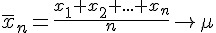 ; 當 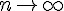 之時。
但是、在上述的趨近定義上，大數法則通常還可以分為強弱兩個版本，如下所示：
弱大數法則 (Weak law) : 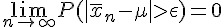
弱大數法則的意義是說，當樣本數趨近於無限大時，樣本平均值會趨近於母體平均數 μ。
強大數法則 (Strong law) : 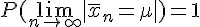
而強大數法則的意義則是說，當樣本數趨近於無限大時，樣本平均值等於母體平均數  的機率為 1。
的機率為 1。
上述的大數法則只是說出一個傾向而已，而且 這個要求太過強烈，現實上是不可能達到的， 如果能夠找到有限樣本下的平均數之變動範圍限制，那會比這樣的無限大要求更好一些。
柴比雪夫不等式
柴比雪夫不等式給出了樣本分佈情況的一個限制條件，其數學公式如下所示：
柴比雪夫不等式所述說的，是樣本平均數與標準差之間的一個限制關係，這個關係不管在哪一種分佈之下，都一定會成立的。
- 與平均數 相差至少 2 個標準差 ( 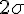 ) 的樣本數目不多於 1/4。
- 與平均數 相差至少 3 個標準差 ( 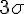 ) 的樣本數目不多於 1/9。
與平均數
相差至少 4 個標準差 ( 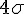 ) 的樣本數目不多於 1/16。與平均數
相差至少 k 個標準差 ( 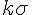 ) 的樣本數目不多於 1 / k2。
舉例而言，假如一個 40 人的班上，同學的平均體重為 50 公斤，標準差為 10 公斤，那麼體重小於 30 公斤的人不可能會超過 10 人。
初步看起來，柴比雪夫不等式非常得奇怪，感覺很不合理，舉例而言，對於 n 個柏努力試驗的樣本，由於樣本值不是 0 就是 1，這樣 應該會不符合柴比雪夫不等式才對，但事實上卻會符合。
讓我們舉一個例子，假如 20 個伯努力試驗，共有十次成功，十次失敗，於是其平均值、變異數與標準差可計算如下：
- 平均值： 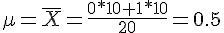
- 變異數： 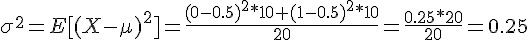
- 標準差： 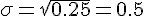
因此，與平均數 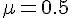 相差兩個標準差的情況根本就不存在 (也就是 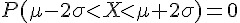 )， 所以柴比雪夫不等式在這樣分為兩個極端的分布上還是會成立的。
雖然柴比雪夫不等式給出了平均值的範圍限制，但是卻沒有給出平均值分佈的形狀，還好中央極限定理解決了這個問題。
中央極限定理簡介
以下是中央極限定理的數學式：

如果用白話文陳述，那就是說 n 個樣本的平均數  會趨近於常態分布。
會趨近於常態分布。
更精確一點的說，當您從某個母體 X 取出 n 個樣本，則這 n 個樣本的平均數 會趨近於以平均期望值 為中心， 以母體標準差  除以
除以  的值 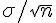 為標準差的常態分布。
的值 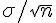 為標準差的常態分布。
如果採用另一種正規化後的公式寫法，也可以將上述的「中央極限定理」改寫為： 
其中的 Z 是指標準常態分部，也就是  會趨近標準常態分布。
會趨近標準常態分布。
中央極限定理的用途
根據上述的定義，我們知道當樣本數 n 足夠大時 (通常 20 個以上就夠大了)， n 個樣本的平均值 會趨近於常態分布，換句話說也就是 會趨近於標準常態分布。
因此、當我們取得一組樣本之後，我們就可以計算其平均數 $\frac{x_1+x_2+...+x_n}{n}=\bar{x}$，如果有人告訴我們說母體的 平均數 的值是多少，我們就可以看看  與 是否差距很遠，如果差距很遠， 導致 來自平均數 母體的機率很小，那麼很可能是此組樣本是非常罕見的特例，或者該組樣本的抽樣有所偏差，也就是該組樣本很可能並非來自平均數為 的母體。
與 是否差距很遠，如果差距很遠， 導致 來自平均數 母體的機率很小，那麼很可能是此組樣本是非常罕見的特例，或者該組樣本的抽樣有所偏差，也就是該組樣本很可能並非來自平均數為 的母體。
以下是一些標準常態分布的重要數值，


> pnorm(1)-pnorm(-1)
[1] 0.6826895
> pnorm(2)-pnorm(-2)
[1] 0.9544997
> pnorm(3)-pnorm(-3)
[1] 0.9973002
> pnorm(4)-pnorm(-4)
[1] 0.9999367
> pnorm(5)-pnorm(-5)
[1] 0.9999994
> pnorm(6)-pnorm(-6)
[1] 1
> options(digits=10)
> pnorm(6)-pnorm(-6)
[1] 0.999999998從上面的數值您可以看出來，管理學上所謂的六標準差其實是很高的一個要求，也就是良率必須要達到 99.9999998% 以上才行。
如果您今天所取的 n 個樣本，與母體平均數 距離兩個標準差以上，那就很可能有問題了，這種推論稱為檢定，我們可以用 R 軟體中的 t.test 函數來檢驗這件事，我們將在下一期當中說明如何用 R 軟體進行統計檢定的主題，讓我們先將焦點移回到中央極限定理身上，用 R 軟體 來驗證該定理。
R 程式範例：驗證中央極限定理
> u <- matrix ( runif(500000), 50, 10000 )
> y <- apply ( u, 2, mean )
> hist(u[,1])
> hist(y)
> ?apply
> 說明：
- u 乃是將 50 萬個 uniform 樣本分配成 50*10000 的矩陣，
- y 對 u 進行列統計 apply ( u, 2, mean ) 代表對每行取平均值 mean(col of u) 的結果。
- 因此 y 代表從 Uniform Distribution 中每次取出 50 個樣本，然後進行加總平均的結果，也就是
 。
。 - 從下列的 hist(y) 圖形中，我們可以看到中央極限定理的證據：也就是 會趨向常態分布。
![圖、hist(u[,1]) 畫出的圖形](../img/HistU.jpg)
圖、hist(u[,1]) 畫出的圖形

圖、hist(y) 畫出的圖形
CLT = function(x) {
op<-par(mfrow=c(2,2)) # 設為 2*2 的四格繪圖版
hist(x, nclass=50) # 繪製 x 序列的直方圖 (histogram)。
m2 <- matrix(x, nrow=2, ) # 將 x 序列分為 2*k 兩個一組的矩陣 m2。
xbar2 <- apply(m2, 2, mean) # 取每兩個一組的平均值 (x1+x2)/2 放入 xbar2 中。
hist(xbar2, nclass=50) # 繪製 xbar2 序列的直方圖 (histogram)。
m10 <- matrix(x, nrow=10, ) # 將 x 序列分為 10*k 兩個一組的矩陣 m10。
xbar10 <- apply(m10, 2, mean) # 取每10個一組的平均值 (x1+..+x10)/10 放入 xbar10 中。
hist(xbar10, nclass=50) # 繪製 xbar10 序列的直方圖 (histogram)。
m20 <- matrix(x, nrow=20, ) # 將 x 序列分為 25*k 兩個一組的矩陣 m25。
xbar20 <- apply(m20, 2, mean) # 取每20個一組的平均值 (x1+..+x20)/20 放入 xbar20 中。
hist(xbar20, nclass=50) # 繪製 xbar20 序列的直方圖 (histogram)。
}
CLT(rbinom(100000, 20, 0.5)) # 用參數為 n=20, p=0.5 的二項分布驗證中央極限定理。
CLT(runif(100000)) # 用參數為 a=0, b=1 的均等分布驗證中央極限定理。
CLT(rpois(100000, 4)) # 用參數為 lambda=4 的布瓦松分布驗證中央極限定理。
CLT(rgeom(100000, 0.5)) # 用參數為 n=20, m=10, k=5 的超幾何分布驗證中央極限定理。
CLT(rhyper(100000, 20, 10, 5)) # 用參數為 p=0.5 的幾何分布驗證中央極限定理。
CLT(rnorm(100000)) # 用參數為 mean=0, sd=1 的標準常態分布驗證中央極限定理。
CLT(sample(1:6, 100000, replace=T)) # 用擲骰子的分布驗證中央極限定理。
CLT(sample(0:1, 100000, replace=T)) # 用丟銅板的分布驗證中央極限定理。以下是這些指令的執行結果，從這些圖中您可以看到當樣本數到達 20 個的時候，幾乎每種樣本都會趨向常態分布。

圖、指令 CLT(rbinom(100000, 20, 0.5)) 的執行結果

圖、指令 CLT(runif(100000)) 的執行結果

圖、指令 CLT(rpois(100000, 4)) 的執行結果

圖、指令 CLT(rgeom(100000, 0.5)) 的執行結果

圖、指令 CLT(rhyper(100000, 20, 10, 5)) 的執行結果

圖、指令 CLT(rnorm(100000)) 的執行結果

圖、指令 CLT(sample(1:6, 100000, replace=T)) 的執行結果

圖、指令 CLT(sample(0:1, 100000, replace=T)) 的執行結果
結語
在本節當中，我們沒有證明「大數法則、柴比雪夫不等式、中央極限定理」等數學定律，只用了 R 軟體來驗證中央極限定理， 如果對數學比較有興趣的同學，可以參考以下參考文獻中維基百科的證明。
參考文獻
- The Central Limit Theorem (Part 1)
- 洋洋 -- 淺談機率上的幾個極限定理
- Proof of Central Limit Theorem, H. Krieger, Mathematics 157, Harvey Mudd College, Spring, 2005
- Wikipedia:Law of large numbers (有證明柴比雪夫不等式與大數法則)
- Wikipedia:Chebyshev's inequality -- http://en.wikipedia.org/wiki/Chebyshev's_inequality
- Wikipedia:Central limit theorem (有證明中央極限定理)
- 維基百科：大數定律
- 維基百科：切比雪夫不等式 (有證明柴比雪夫不等式)
- 維基百科：中央極限定理
- Two Proofs of the Central Limit Theorem, Yuval Filmus, January/February 2010